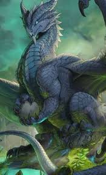
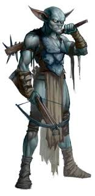
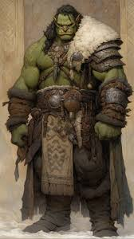
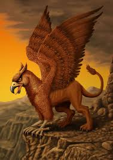
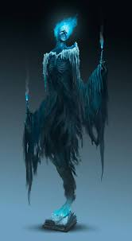

Classes Famosas de RPG
 Guerreiro: Especialista em combate corpo a corpo. Utiliza uma grande variedade de armas e armaduras.
Guerreiro: Especialista em combate corpo a corpo. Utiliza uma grande variedade de armas e armaduras.
 Mago: Conjurador de feitiços com grande poder à distância, mas frágil fisicamente.
Mago: Conjurador de feitiços com grande poder à distância, mas frágil fisicamente.
 Ladino: Mestre em ataques furtivos e exploração.
Ladino: Mestre em ataques furtivos e exploração.
 Clérigo: Conjurador divino, capaz de curar seus aliados e lutar com eficácia.
Clérigo: Conjurador divino, capaz de curar seus aliados e lutar com eficácia.
 Bárbaro: Um guerreiro movido pela fúria, com resistência natural a danos.
Bárbaro: Um guerreiro movido pela fúria, com resistência natural a danos.
Bestiário
Dragão: Criatura lendária e poderosa, muitas vezes associada a grandes tesouros e desafios épicos.
Goblin: Pequeno e astuto, frequentemente encontrado em grupos e conhecido por suas travessuras.
Orc: Criatura robusta e feroz, muitas vezes um inimigo temido nas batalhas.
Grifo: Criatura mítica com corpo de leão e cabeça de águia, geralmente associada a lendas e guardiões.
Espectro: Espírito ou fantasma que assombra locais, conhecido por suas habilidades de assombração e invisibilidade.
Dados de RPG
D20 (20 lados): O dado mais usado para ações importantes.
D12 (12 lados): Usado para armas pesadas.
D10 (10 lados): Usado para porcentagens.
D8 (8 lados): Usado para danos de armas médias.
D6 (6 lados): Clássico em jogos de tabuleiro, usado para armas menores.
D4 (4 lados): Para armas pequenas ou feitiços menores.
Sistemas
Dungeons & Dragons (D&D): O RPG mais famoso, com uso predominante do D20.
Pathfinder: Um sistema derivado de D&D, com mais opções de personalização.
GURPS: Sistema genérico para qualquer cenário.
Vampiro: A Máscara: RPG de horror onde os jogadores são vampiros.